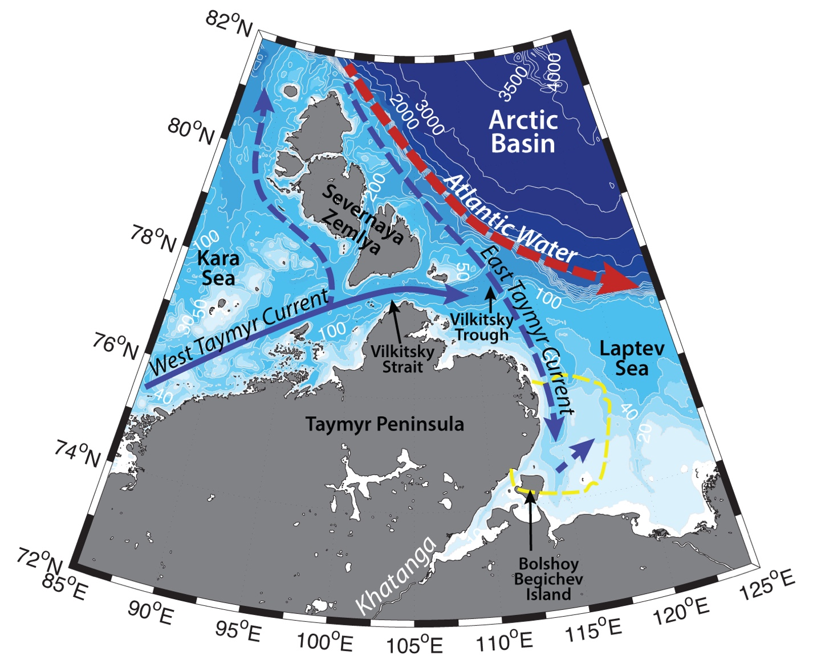

Schematic water circulation patterns and geographical place names in the Taymyr region. Adopted from Janout et al. (2017). Dashed yellow line marks the studied region.
Hydrography of the region near Taymyr coast is determined by the freshwater discharge of Khatanga, Anabar, Olenyok rivers, semidiurnal tides, advection of the Ob-Yenisei plume through Vilkitsky strait, Taymyr Polynya and Taymyr Ice Massif formation.
In general, two-layer structure dominates the water column close to Taymyr coast. Arctic waters freshened by the river discharge on the surface are underlaid by cold saline water (S>30) of the East Taymyr Current beneath 15 m depth (Dobrovolskyi, Zalogin, 1982). Khatanga (discharge of ~100 km3 annually), Anabar (discharge <20 km3 annually), Olenyok (discharge of ~35 km3 annually) rivers freshen the surface waters of the Western Laptev Sea. Vertical mixing in the region depends on the volumes of freshwater discharge as well as atmospheric forcing. The freshened surface water mass, formed by the mentioned above river plumes involves in a surface cyclonic circulation in the Laptev Sea. East Taymyr Current flows southwards along the eastern coast of Severnaya Zemlya and Taymyr peninsula (Marchenko, 2012). While the flow speeds in this current are rather low (around 2 cm/s), it advects the cold and salty bottom waters towards the coast.
It is unlikely, that vast Lena river plume reaches Taymyr coast, however it can influence the region, when eastward transport of the plume is hindered under the influence of strong southward winds, and the flow turns northwards. Ob-Yenisei plume, in turns, (combined discharge of ~1000 km3 annually; Gordeev et al., 1996; Carmack, 2000; Guay et al., 2001; Janout et al., 2015), when advected in a baroclinic eastward flow in narrow quasi-geostrophic West Taymyr Current, enhanced by downwelling favorable winds, can flow through the southern part of 200 m deep and ~60 km wide Vilkitsky strait into the Laptev Sea (known as Vilkitsky Strait Current; e.g. Janout et al., 2015). Some studies suggest, that West Taymyr Current further can wrap around Taymyr Peninsula and proceed southwards joining East Taymyr Current (Pavlov et al., 1996). This way it can further contribute to the Eurasian branch of the Riverine Coastal Domain (RCD) – a narrow (~<15km), shallow (~10m) contiguous feature, extending clockwise along the Arctic shores. RCD is driven by an aggregation of continental runoff and carry terrestrial physical and biogeochemical properties affecting marine life in the region. Between RCD and ambient sea forms a continuous gradient of various properties, which position depends on the state and behavior of the river plumes and various physical forcing affecting the dynamics of the coastal waters (Carmack et al., 2015).
Aksenov et al. (2011) and Janout et al. (2015), in turn, have discussed, that West Taymyr Current exits through ~200 m deep Vilkitsky Trough and propagate further eastwards along the Arctic continental slopes, joining the Arctic Boundary Current. Unfortunately, due to remoteness of the region and harsh winter conditions, detailed observations are missing and the fate of the currents still need verification.
On the eastern coast of Taymyr peninsula semidiurnal tides amplitude are higher compared to the majority of Arctic coasts – they can reach up to 1.5 – 2.9 m. Tides in the Khatanga estuary mixes the water column and causes formation of a diluted bottom-advected plume in the Khatanga Gulf (Osadchiev et al., 2020b). Unique topography of the gulf facilitates the amplification of the tide, so that it propagates further and can move up to 500 km south into the Khatanga river (Dobrovolskyi, Zalogin, 1982).
During cold season the water column gets thoroughly mixed relatively quickly, lots of land fast ice is being formed in the region. This ice is known to sometimes survive the summer and become multiyear ice. Its registered width can be ~20 km, described in literature as Taymyr Ice Massif. During summer the Ice Massif protects the coastal zone and estuaries from all but tidal action, makes the shores inaccessible both to transport and animals, reduces biological productivity and sediment exchange. Under prevailing offshore winds flaw leads can be formed (Reimnitz et al., 1995).
East Taymyr Polynya is a part of a Great Siberian Polynya system – a recurring phenomenon on the Laptev Shelf, up to 200 km wide (Dmitrenko et al., 2005b). Great Siberian Polynya is one of the main features, determining the high biological productivity and concentration of marine life in the Laptev Sea. It also produces cold (T<–1.6 °С) and salty (S>34) bottom waters for the Siberian shelf and Arctic Ocean due to convective overturning, and induce intensive ice formation (Martin and Cavalieri, 1989; Winsor and Bjork, 2000; Eicken et al., 1997; Alexandrov et al., 2000). Vilkitsky Trough just to the east from Vilkitsky Strait is another spot for the cascading of near-freezing waters into Eurasian Basin. While Atlantic waters have been found in the Vilkitsky Trough below 100 m (S~ 34.85, T~0 °C), no upwellings were observed (Janout et al., 2017).
Due to rather weak winds over the shelf and harsh winter conditions Laptev Sea is generally ice covered from September–October to June–July, but this situation may drastically change in the times of changing climate and ice-free Arctic.